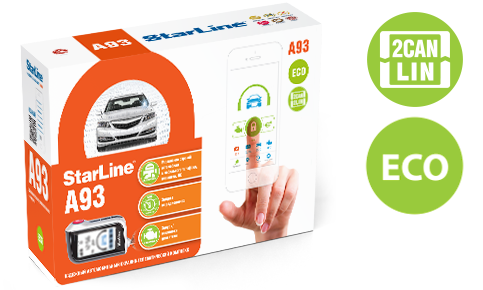

Автосигнализация StarLine A93 2CAN-2LIN ECO
Краткое описание товара
Надежный автомобильный охранно-телематический комплекс с интеллектуальным автозапуском, не сканируемым диалоговым кодом управления, интегрированным 2CAN+2LIN интерфейсом, опциональным GSM интерфейсами, опциональным GPS-ГЛОНАСС мониторингом, SUPER SLAVE авторизацией, ударопрочным брелком управления, 128-канальным помехозащищенным трансивером с дальностью оповещения до 2000 мХарактеристики товара
| Общие | |||||||
|---|---|---|---|---|---|---|---|
| № | Наименование | Значение | TM | ||||
| 1 | ДИАЛОГОВАЯ ЗАЩИТА | Шифрования 128 бит | |||||
| 2 | РАСШИРЕННЫЙ ДИАПАЗОН ТЕМПЕРАТУР | От минус 50 до плюс 85 °С | |||||
| 3 | РЕКОРДНАЯ ЭНЕРГОЭКОНОМИЧНОСТЬ | До 60 дней в режиме охраны | |||||
| 4 | ТЕЛЕМАТИКА (ОПЦИЯ) | GSM, GPS-ГЛОНАСС | |||||
| 5 | АВТОЗАПУСК | По температуре, в заданное время или периодически | |||||
| 6 | ЗАЩИТА ОТ РАДИОПОМЕХ | 128-канальным трансивером | |||||
Комплектация:
- Центральный блок сигнализации (2CAN+2LIN)
- Сервисная кнопка Брелок с двусторонней связью с ЖКИ
- Комплект проводов
- Силовой модуль
- Кнопка капота
- Приемопередатчик
- Реле блокировки с колодкой
- Светодиод
- Датчик температуры двигателя
- Сирена
Полное описание товара
Надежный автомобильный охранно-телематический комплекс с интеллектуальным автозапуском, не сканируемым диалоговым кодом управления, интегрированным 2CAN+2LIN интерфейсом, опциональным GSM интерфейсами, опциональным GPS-ГЛОНАСС мониторингом, SUPER SLAVE авторизацией, ударопрочным брелком управления, 128-канальным помехозащищенным трансивером с дальностью оповещения до 2000 м*Названия StarLine A93 2CAN+2LIN и StarLine A93 2CAN+LIN идентичны и обозначают одну модель
Диалоговая защита
Диалоговый код управления StarLine c индивидуальными ключами шифрования 128 бит гарантирует надежную защиту от всех известных кодграбберов
Защита от радиопомех
StarLine уверенно работает в условиях экстремальных городских радиопомех, благодаря уникальному 128-канальному трансиверу
Авторизация по пин-коду
Дополнительная авторизация надежно защищает автомобиль от угона, усиливая охранные функции штатной сигнализации. Поездка возможна только после ввода индивидуального PIN-кода при помощи штатных кнопок автомобиля
Автозапуск
Интеллектуальный автозапуск позволяет осуществлять дистанционный и автоматический запуск двигателя по температуре, в заданное время или периодически
Интегрированный 2CAN+2LIN интерфейс
Интерфейс 2CAN+2LIN обеспечивает быструю и безопасную установку охранного оборудования StarLine с минимальным вмешательством в проводку автомобиля